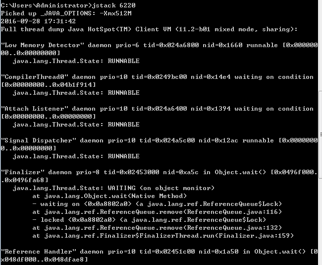
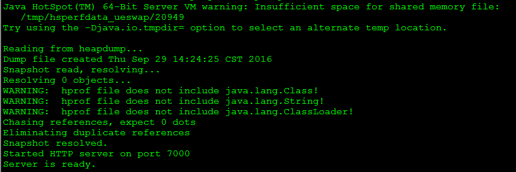
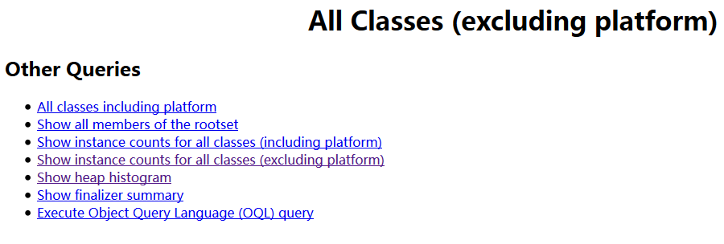
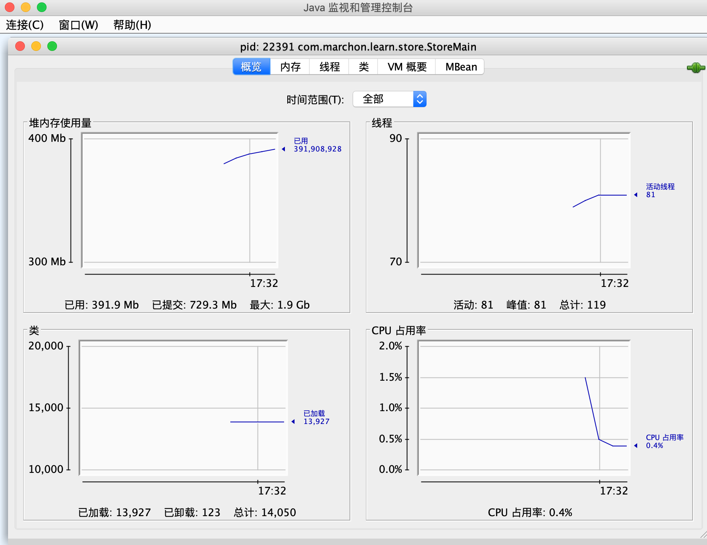
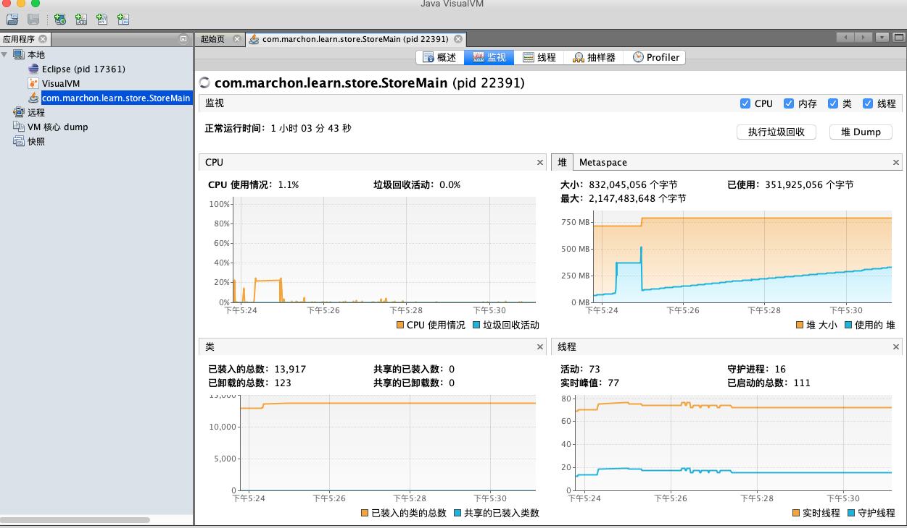

概述
在JDK的bin目录下有很多命令行工具

这些工具大多数是jdk\lib\tools.jar类库的一层薄包装而已，他们的主要功能代码是在tools类库中实现的，借助tools.jar类库里面的接口，我们可以直接在应用程序中实现功能强大的监控分析功能。
java dump
java dump就是虚拟机运行时的快照，将虚拟机运行时的状态和信息保存到文件中，包括：
- 线程dump：包含所有线程的运行状态，纯文本格式
- 堆dump：包含所有堆对象的状态，二进制格式
常用命令
- jps：查看本机java进程信息
- jstack：打印线程的栈信息，制作线程dump文件
- jmap：打印内存映射信息，制作堆dump文件
- jstat：性能监控工具
- jhat：内存分析工具，用于解析堆dump文件并以适合人阅读的方式展示出来
- jconsole：简易的JVM可视化工具
- jvisualvm：功能更强大的JVM可视化工具
jps
显示当前所有java进程pid的命令，可以通过这个命令来查看到底启动了几个java进程（因为每一个java程序都会独占一个java虚拟机实例），不过jps有个缺点是只能显示当前用户的进程id，要显示其他用户的还只能用linux的ps命令。
执行jps命令，会列出所有正在运行的java进程，其中jps命令也是一个java程序。前面的数字就是进程的id，这个id的作用非常大，后面会有相关介绍。
[root@zhimin serops]# jps -h
illegal argument: -h
usage: jps [-help]
jps [-q] [-mlvV] [<hostid>]
Definitions:
<hostid>: <hostname>[:<port>]
#列出所有正在运行的java进程
[root@zhimin serops]# jps
41576 Bootstrap
58348 Jps
jps -l 输出应用程序main.class的完整package名或者应用程序jar文件完整路径名
[root@zhimin serops]# jps -l
41576 org.apache.catalina.startup.Bootstrap
58593 sun.tools.jps.Jps
jps -v 输出传递给JVM的参数
[root@zhimin serops]# jps -v
41576 Bootstrap -Djavax.sql.DataSource.Factory=org.apache.commons.dbcp.BasicDataSourceFactory -Djava.awt.headless=true -Xmx128m -XX:+UseConcMarkSweepGC -Xmx6144m -Xms4096m -XX:PermSize=256M -XX:MaxPermSize=512M -Dfile.encoding=gbk -Djsse.enableSNIExtension=false -Dorg.apache.tomcat.util.buf.UDecoder.ALLOW_ENCODED_SLASH=true -Dcom.sun.management.jmxremote -Djava.rmi.server.hostname=10.10.2.203 -Dcom.sun.management.jmxremote.authenticate=false -Dcom.sun.management.jmxremote.ssl=false -Dcom.sun.management.jmxremote.port=12345 -Dcatalina.base=/usr/share/tomcat -Dcatalina.home=/usr/share/tomcat -Djava.endorsed.dirs= -Djava.io.tmpdir=/var/cache/tomcat/temp -Djava.util.logging.config.file=/usr/share/tomcat/conf/logging.properties -Djava.util.logging.manager=org.apache.juli.ClassLoaderLogManager
58664 Jps -Denv.class.path=.:/usr/local/java/jdk1.7.0_80/lib:/usr/local/java/jdk1.7.0_80/lib/tools.jar -Dapplication.home=/usr/local/java/jdk1.7.0_80 -Xms8m
jps失效
我们在定位问题过程会遇到这样一种情况，用jps查看不到进程id，用ps -ef | grep java却能看到启动的java进程。
要解释这种现象，先来了解下jps的实现机制：
java程序启动后，会在目录/tmp/hsperfdata_{userName}/下生成几个文件，文件名就是java进程的pid，因此jps列出进程id就是把这个目录下的文件名列一下而已，至于系统参数，则是读取文件中的内容。
我们来思考下：如果由于磁盘满了，无法创建这些文件，或者用户对这些文件没有读的权限。又或者因为某种原因这些文件或者目录被清除，出现以上这些情况，就会导致jps命令失效。
如果jps命令失效，而我们又要获取pid，还可以使用以下两种方法：
top | grep java
ps -ef |grep java
如果是用户没有读的权限，需要切换到对应的用户
[root@zhimin public]# /usr/local/java/jdk1.7.0_80/bin/jps
41576 -- process information unavailable
58909 Jps
[root@zhimin public]# su - tomcat
#如果tomcat用户没有开户登录权限，需要更新用户权限
[root@zhimin public]# grep tomcat /etc/passwd
tomcat:x:91:91:Apache Tomcat:/usr/share/tomcat:/sbin/nologin
#开启用户登录权限
[root@zhimin public]# usermod -s /bin/bash tomcat
jstack
主要用于生成指定进程当前时刻的线程快照，线程快照是当前java虚拟机每一条线程正在执行的方法堆栈的集合，生成线程快照的主要目的是用于定位线程出现长时间停顿的原因，如线程间死锁、死循环、请求外部资源导致长时间等待。 
jmap
主要用于打印指定java进程的共享对象内存映射或堆内存细节。堆Dump是反映堆使用情况的内存镜像，其中主要包括系统信息、虚拟机属性、完整的线程Dump、所有类和对象的状态等。一般在内存不足，GC异常等情况下，我们会去怀疑内存泄漏，这个时候就会去打印堆Dump。
[root@zhimin public]# /usr/local/java/jdk1.7.0_80/bin/jmap -h
Usage:
jmap [option] <pid>
(to connect to running process)
jmap [option] <executable <core>
(to connect to a core file)
jmap [option] [server_id@]<remote server IP or hostname>
(to connect to remote debug server)
where <option> is one of:
<none> to print same info as Solaris pmap
-heap to print java heap summary
-histo[:live] to print histogram of java object heap; if the "live"
suboption is specified, only count live objects
-permstat to print permanent generation statistics
-finalizerinfo to print information on objects awaiting finalization
-dump:<dump-options> to dump java heap in hprof binary format
dump-options:
live dump only live objects; if not specified,
all objects in the heap are dumped.
format=b binary format
file=<file> dump heap to <file>
Example: jmap -dump:live,format=b,file=heap.bin <pid>
-F force. Use with -dump:<dump-options> <pid> or -histo
to force a heap dump or histogram when <pid> does not
respond. The "live" suboption is not supported
in this mode.
-h | -help to print this help message
-J<flag> to pass <flag> directly to the runtime system
jmap -heap 查看堆使用情况
jmap -heap pid：查看堆使用情况
#使用jmap查看堆使用情况
[tomcat@ecc public]# jmap -heap 41576
Attaching to process ID 41576, please wait...
Debugger attached successfully.
Server compiler detected.
JVM version is 24.80-b11
using parallel threads in the new generation.
using thread-local object allocation.
Concurrent Mark-Sweep GC
Heap Configuration: #堆内存初始化配置
MinHeapFreeRatio = 40 #堆最小空闲比率
MaxHeapFreeRatio = 70 #堆最大空闲比率
MaxHeapSize = 6442450944 (6144.0MB) #堆最大大小
NewSize = 697892864 (665.5625MB) #堆新生代的默认大小
MaxNewSize = 697892864 (665.5625MB) #堆新生代最大大小
OldSize = 1395851264 (1331.1875MB) #老年代大小
NewRatio = 2 #新生代和老年代的大小比率
SurvivorRatio = 8 #年轻代中的Eden区与Survivor区的大小比率
PermSize = 268435456 (256.0MB) #永久代的初始大小
MaxPermSize = 536870912 (512.0MB) #永久代的最大大小
G1HeapRegionSize = 0 (0.0MB)
Heap Usage: #堆内存使用情况
New Generation (Eden + 1 Survivor Space): #新生代
capacity = 628162560 (599.0625MB) #容量
used = 472997696 (451.08575439453125MB) #已使用容量
free = 155164864 (147.97674560546875MB) #空闲容量
75.29861314880021% used #使用比率
Eden Space: #新生代的Eden区内存分布
capacity = 558432256 (532.5625MB)
used = 469345784 (447.60301971435547MB)
free = 89086472 (84.95948028564453MB)
84.04704043456974% used
From Space: #新生代的其中一个Survivor区内存分布
capacity = 69730304 (66.5MB)
used = 3651912 (3.4827346801757812MB)
free = 66078392 (63.01726531982422MB)
5.2371950077831295% used
To Space: #新生代的另一个Survivor区内存分布
capacity = 69730304 (66.5MB)
used = 0 (0.0MB)
free = 69730304 (66.5MB)
0.0% used
concurrent mark-sweep generation: #老年代内存分布
capacity = 3597074432 (3430.4375MB)
used = 380603000 (362.97130584716797MB)
free = 3216471432 (3067.466194152832MB)
10.580904209657456% used
Perm Generation: #永久代内存分布
capacity = 268435456 (256.0MB)
used = 93387224 (89.06099700927734MB)
free = 175048232 (166.93900299072266MB)
34.78945195674896% used
55061 interned Strings occupying 6281928 bytes.
jmap -histo 查看堆中对象数量和大小
jmap -histo pid：查看堆中对象数量和大小，打印的信息分别是：序列号、对象的数量、这些对象的内存占用大小、这些对象所属的类的全限定名，如果是内部类，类名的开头会加上*，如果加上live子参数的话，如jmap -histo：live pid，这个命名会触发一次FUll GC，只统计存活对象。
[tomcat@ecc public]# jmap -histo 41576
num #instances #bytes class name
----------------------------------------------
1: 7595227 351264512 [C
2: 6288738 150929712 java.lang.String
3: 536842 74534664 [I
4: 1246005 54818296 [B
5: 1514524 48464768 java.util.HashMap$Entry
6: 159420 24244336 <constMethodKlass>
7: 726213 23238816 org.apache.ibatis.reflection.property.PropertyTokenizer
8: 159420 20418224 <methodKlass>
9: 541950 19867848 [Ljava.lang.Object;
10: 199164 19119744 org.apache.xmlbeans.impl.store.Xobj$AttrXobj
11: 741813 17803512 com.alibaba.druid.filter.FilterChainImpl
12: 13996 17358056 <constantPoolKlass>
13: 45196 15547424 com.fund.etrading.eccapp.dto.FundInfoDto
14: 154148 14798208 org.apache.xmlbeans.impl.store.Xobj$ElementXobj
15: 26319 10996912 [Ljava.util.HashMap$Entry;
16: 13996 10489696 <instanceKlassKlass>
17: 253131 10125240 sun.misc.FloatingDecimal
18: 11750 9966240 <constantPoolCacheKlass>
19: 36202 8978096 com.zlfund.ecc.pro.model.FundInfo
20: 43722 5783808 [[B
21: 84143 5385152 java.util.regex.Matcher
22: 8640 5051912 <methodDataKlass>
23: 83109 3989232 java.util.StringTokenizer
24: 145390 3489360 java.lang.Double
25: 77557 3102280 java.util.TreeMap$Entry
jmap -dump 输出dump文件
jmap -dump:format=b,file=heapdump pid：将内存使用的详细情况输出到文件，然后使用jhat命令查看该文件：jhat -port 4000 文件名，在浏览器中访问http:localhost:4000/
jstat
Jstat是JDK自带的一个轻量级小工具。全称“Java Virtual Machine statistics monitoring tool”，它位于java的bin目录下，主要利用JVM内建的指令对Java应用程序的资源和性能进行实时的命令行的监控，包括了对Heap size和垃圾回收状况的监控。
jstat 用法
[root@zhimin serops]# jstat -help
Usage: jstat -help|-options
jstat -<option> [-t] [-h<lines>] <vmid> [<interval> [<count>]]
Definitions:
<option> An option reported by the -options option
<vmid> Virtual Machine Identifier. A vmid takes the following form:
<lvmid>[@<hostname>[:<port>]]
Where <lvmid> is the local vm identifier for the target
Java virtual machine, typically a process id; <hostname> is
the name of the host running the target Java virtual machine;
and <port> is the port number for the rmiregistry on the
target host. See the jvmstat documentation for a more complete
description of the Virtual Machine Identifier.
<lines> Number of samples between header lines.
<interval> Sampling interval. The following forms are allowed:
<n>["ms"|"s"]
Where <n> is an integer and the suffix specifies the units as
milliseconds("ms") or seconds("s"). The default units are "ms".
<count> Number of samples to take before terminating.
-J<flag> Pass <flag> directly to the runtime system.
#option： 参数选项
#-t： 可以在打印的列加上Timestamp列，用于显示系统运行的时间
#-h： 可以在周期性数据数据的时候，可以在指定输出多少行以后输出一次表头
#vmid： Virtual Machine ID（ 进程的 pid）
#interval： 执行每次的间隔时间，单位为毫秒
#count： 用于指定输出多少次记录，缺省则会一直打印
option可以从下面参数中选择
[root@zhimin serops]# jstat -options
-class
-compiler
-gc
-gccapacity
-gccause
-gcnew
-gcnewcapacity
-gcold
-gcoldcapacity
-gcpermcapacity
-gcutil
-printcompilation
#-class：显示ClassLoad的相关信息；
#-compiler：显示JIT编译的相关信息；
#-gc：显示和gc相关的堆信息；
#-gccapacity：显示各个代的容量以及使用情况；
#-gcmetacapacity：显示metaspace的大小
#-gcnew：显示新生代信息；
#-gcnewcapacity：显示新生代大小和使用情况；
#-gcold：显示老年代和永久代的信息；
#-gcoldcapacity：显示老年代的大小；
#-gcutil：显示垃圾收集信息；
#-gccause：显示垃圾回收的相关信息（通-gcutil）,同时显示最后一次或当前正在发生的垃圾回收的诱因；
#-printcompilation：输出JIT编译的方法信息；
jstat -class [pid]
#显示加载class的数量，及所占空间等信息。
#Loaded : 已经装载的类的数量
#Bytes : 装载类所占用的字节数
#Unloaded：已经卸载类的数量
#Bytes：卸载类的字节数
#Time：装载和卸载类所花费的时间
[root@zhimin serops]# jstat -class 41576
Loaded Bytes Unloaded Bytes Time
9823 20551.5 0 0.0 8.83
jstat -compiler [pid]
#显示VM实时编译(JIT)的数量等信息。
#Compiled：编译任务执行数量
#Failed：编译任务执行失败数量
#Invalid ：编译任务执行失效数量
#Time ：编译任务消耗时间
#FailedType：最后一个编译失败任务的类型
#FailedMethod：最后一个编译失败任务所在的类及方法
[root@zhimin serops]# jstat -compiler 41576
Compiled Failed Invalid Time FailedType FailedMethod
2899 0 0 57.49 0
jstat -gc [pid]
#显示gc相关的堆信息，查看gc的次数，及时间。
#S0C：年轻代中第一个survivor（幸存区）的容量 （字节）
#S1C：年轻代中第二个survivor（幸存区）的容量 (字节)
#S0U ：年轻代中第一个survivor（幸存区）目前已使用空间 (字节)
#S1U ：年轻代中第二个survivor（幸存区）目前已使用空间 (字节)
#EC ：年轻代中Eden（伊甸园）的容量 (字节)
#EU ：年轻代中Eden（伊甸园）目前已使用空间 (字节)
#OC ：Old代的容量 (字节)
#OU ：Old代目前已使用空间 (字节)
#PC：永久代的容量 (字节)
#PU：永久代目前已使用空间 (字节)
#YGC ：从应用程序启动到采样时年轻代中gc次数
#YGCT ：从应用程序启动到采样时年轻代中gc所用时间(s)
#FGC ：从应用程序启动到采样时old代(全gc)gc次数
#FGCT ：从应用程序启动到采样时old代(全gc)gc所用时间(s)
#GCT：从应用程序启动到采样时gc用的总时间(s)
[root@zhimin serops]# jstat -gc 41576 250 10
S0C S1C S0U S1U EC EU OC OU PC PU YGC YGCT FGC FGCT GCT
68096.0 68096.0 0.0 58313.2 545344.0 232052.0 3512768.0 72494.1 262144.0 69267.1 7 0.538 0 0.000 0.538
68096.0 68096.0 0.0 58313.2 545344.0 232052.0 3512768.0 72494.1 262144.0 69267.1 7 0.538 0 0.000 0.538
68096.0 68096.0 0.0 58313.2 545344.0 232052.0 3512768.0 72494.1 262144.0 69267.1 7 0.538 0 0.000 0.538
jstat -gccapacity [pid]
#显示VM内存中三代（young,old,perm）对象的使用和占用大小
#NGCMN ：年轻代(young)中初始化(最小)的大小(字节)
#NGCMX ：年轻代(young)的最大容量 (字节)
#NGC ：年轻代(young)中当前的容量 (字节)
#S0C ：年轻代中第一个survivor（幸存区）的容量 (字节)
#S1C ： 年轻代中第二个survivor（幸存区）的容量 (字节)
#EC ：年轻代中Eden（伊甸园）的容量 (字节)
#OGCMN ：old代中初始化(最小)的大小 (字节)
#OGCMX ：old代的最大容量(字节)
#OGC：old代当前新生成的容量 (字节)
#OC ：Old代的容量 (字节)
#MCMN：metaspace(元空间)中初始化(最小)的大小 (字节)
#MCMX ：metaspace(元空间)的最大容量 (字节)
#MC ：metaspace(元空间)当前新生成的容量 (字节)
#CCSMN：最小压缩类空间大小
#CCSMX：最大压缩类空间大小
#CCSC：当前压缩类空间大小
#YGC ：从应用程序启动到采样时年轻代中gc次数
#FGC：从应用程序启动到采样时old代(全gc)gc次数
[root@zhimin serops]# jstat -gccapacity 41576 250 5
NGCMN NGCMX NGC S0C S1C EC OGCMN OGCMX OGC OC PGCMN PGCMX PGC PC YGC FGC
681536.0 681536.0 681536.0 68096.0 68096.0 545344.0 3512768.0 5609920.0 3512768.0 3512768.0 262144.0 524288.0 262144.0 262144.0 7 0
681536.0 681536.0 681536.0 68096.0 68096.0 545344.0 3512768.0 5609920.0 3512768.0 3512768.0 262144.0 524288.0 262144.0 262144.0 7 0
681536.0 681536.0 681536.0 68096.0 68096.0 545344.0 3512768.0 5609920.0 3512768.0 3512768.0 262144.0 524288.0 262144.0 262144.0 7 0
jstat -gcnew [pid]
#年轻代对象的信息
#S0C ：年轻代中第一个survivor（幸存区）的容量 (字节)
#S1C ：年轻代中第二个survivor（幸存区）的容量 (字节)
#S0U ：年轻代中第一个survivor（幸存区）目前已使用空间 (字节)
#S1U ：年轻代中第二个survivor（幸存区）目前已使用空间 (字节)
#TT：持有次数限制
#MTT：最大持有次数限制
#DSS：期望的幸存区大小
#EC：年轻代中Eden（伊甸园）的容量 (字节)
#EU ：年轻代中Eden（伊甸园）目前已使用空间 (字节)
#YGC ：从应用程序启动到采样时年轻代中gc次数
#YGCT：从应用程序启动到采样时年轻代中gc所用时间(s)
[root@zhimin serops]# jstat -gcnew 41576
S0C S1C S0U S1U TT MTT DSS EC EU YGC YGCT
68096.0 68096.0 0.0 58313.2 1 6 34048.0 545344.0 383988.6 7 0.538
jstat -gcnewcapacity [pid]
#年轻代对象的信息及其占用量
#NGCMN ：年轻代(young)中初始化(最小)的大小(字节)
#NGCMX ：年轻代(young)的最大容量 (字节)
#NGC ：年轻代(young)中当前的容量 (字节)
#S0CMX ：年轻代中第一个survivor（幸存区）的最大容量 (字节)
#S0C ：年轻代中第一个survivor（幸存区）的容量 (字节)
#S1CMX ：年轻代中第二个survivor（幸存区）的最大容量 (字节)
#S1C：年轻代中第二个survivor（幸存区）的容量 (字节)
#ECMX：年轻代中Eden（伊甸园）的最大容量 (字节)
#EC：年轻代中Eden（伊甸园）的容量 (字节)
#YGC：从应用程序启动到采样时年轻代中gc次数
#FGC：从应用程序启动到采样时old代(全gc)gc次数
[root@zhimin serops]# jstat -gcnewcapacity 41576
NGCMN NGCMX NGC S0CMX S0C S1CMX S1C ECMX EC YGC FGC
681536.0 681536.0 681536.0 68096.0 68096.0 68096.0 68096.0 545344.0 545344.0 8 0
jstat -gcold [pid]
#old代对象的信息
#PC：永久代的容量 (字节)
#PU：永久代目前已使用空间 (字节)
#OC：Old代的容量 (字节)
#OU：Old代目前已使用空间 (字节)
#YGC：从应用程序启动到采样时年轻代中gc次数
#FGC：从应用程序启动到采样时old代(全gc)gc次数
#FGCT：从应用程序启动到采样时old代(全gc)gc所用时间(s)
#GCT：从应用程序启动到采样时gc用的总时间(s)
[root@zhimin serops]# jstat -gcold 41576 250 5
PC PU OC OU YGC FGC FGCT GCT
262144.0 73301.1 3512768.0 99482.6 8 0 0.000 0.643
262144.0 73301.1 3512768.0 99482.6 8 0 0.000 0.643
262144.0 73301.1 3512768.0 99482.6 8 0 0.000 0.643
262144.0 73301.1 3512768.0 99482.6 8 0 0.000 0.643
262144.0 73301.1 3512768.0 99482.6 8 0 0.000 0.643
jstat -gcoldcapacity [pid]
#old代对象的信息及其占用量
#OGCMN ：old代中初始化(最小)的大小 (字节)
#OGCMX ：old代的最大容量(字节)
#OGC ：old代当前新生成的容量 (字节)
#OC ：Old代的容量 (字节)
#YGC ：从应用程序启动到采样时年轻代中gc次数
#FGC ：从应用程序启动到采样时old代(全gc)gc次数
#FGCT ：从应用程序启动到采样时old代(全gc)gc所用时间(s)
#GCT：从应用程序启动到采样时gc用的总时间(s)
[root@zhimin serops]# jstat -gcoldcapacity 41576 250 5
OGCMN OGCMX OGC OC YGC FGC FGCT GCT
3512768.0 5609920.0 3512768.0 3512768.0 8 0 0.000 0.643
3512768.0 5609920.0 3512768.0 3512768.0 8 0 0.000 0.643
3512768.0 5609920.0 3512768.0 3512768.0 8 0 0.000 0.643
3512768.0 5609920.0 3512768.0 3512768.0 8 0 0.000 0.643
3512768.0 5609920.0 3512768.0 3512768.0 8 0 0.000 0.643
jstat -gcutil [pid]
#统计gc信息
#S0 ：年轻代中第一个survivor（幸存区）已使用的占当前容量百分比
#S1 ：年轻代中第二个survivor（幸存区）已使用的占当前容量百分比
#E ：年轻代中Eden（伊甸园）已使用的占当前容量百分比
#O ：old代已使用的占当前容量百分比
#P ：perm代已使用的占当前容量百分比
#YGC ：从应用程序启动到采样时年轻代中gc次数
#YGCT ：从应用程序启动到采样时年轻代中gc所用时间(s)
#FGC ：从应用程序启动到采样时old代(全gc)gc次数
#FGCT ：从应用程序启动到采样时old代(全gc)gc所用时间(s)
#GCT：从应用程序启动到采样时gc用的总时间(s)
[root@zhimin serops]# jstat -gcutil 41576 250 5
S0 S1 E O P YGC YGCT FGC FGCT GCT
98.00 0.00 69.58 2.83 27.97 8 0.643 0 0.000 0.643
98.00 0.00 69.66 2.83 27.97 8 0.643 0 0.000 0.643
98.00 0.00 69.66 2.83 27.97 8 0.643 0 0.000 0.643
98.00 0.00 69.66 2.83 27.97 8 0.643 0 0.000 0.643
98.00 0.00 69.66 2.83 27.97 8 0.643 0 0.000 0.643
jstat -gccause [pid]
#显示垃圾回收的相关信息（通-gcutil）,同时显示最后一次或当前正在发生的垃圾回收的诱因。
#LGCC：最后一次GC原因
#GCC：当前GC原因（No GC 为当前没有执行GC）
[root@zhimin serops]# jstat -gccause 41576
S0 S1 E O P YGC YGCT FGC FGCT GCT LGCC GCC
0.00 100.00 16.28 3.07 27.97 9 0.707 0 0.000 0.707 Allocation Failure No GC
jstat -printcompilation [pid]
#当前VM执行的信息
#Compiled ：编译任务的数目
#Size ：方法生成的字节码的大小
#Type：编译类型
#Method：类名和方法名用来标识编译的方法。类名使用/做为一个命名空间分隔符。方法名是给定类中的方法。上述格式是由-XX:+PrintComplation选项进行设置的
[root@zhimin serops]# jstat -printcompilation 41576
Compiled Size Type Method
3082 985 1 java/io/ObjectInputStream$PeekInputStream readFully
jhat
jhat主要用来解析java堆dump并启动一个web服务器，然后就可以在浏览器中查看堆的dump文件了。生成dump文件的方法前面已经介绍了，这边主要介绍如何解析java堆转储文件，并启动一个web server。
jhat heapdump：这个命令将heapdump文件转换成html格式，并且启动一个http服务，默认端口为7000。如果端口冲突，可以使用以下命令指定端口：jhat -port 4000 heapdump

web访问效果： 
jinfo
jinfo可以用来查看正在运行的java运用程序的扩展参数，甚至支持在运行时动态地更改部分参数。
基本使用语法如下：jinfo -< option > < pid >，其中option可以为以下信息：
-flag< name >: 打印指定java虚拟机的参数值
-flag [+|-]< name >：设置或取消指定java虚拟机参数的布尔值
-flag < name >=< value >：设置指定java虚拟机的参数的值
使用示例
下面的命令显示了新生代对象晋升到老年代对象的最大年龄。在运行程序运行时并没有指定这个参数，但是通过jinfo，可以查看这个参数的当前的值。
[tomcat@ecc public]# jinfo -flag MaxTenuringThreshold 41576
-XX:MaxTenuringThreshold=6
下面的命令显示是否打印gc详细信息：
[tomcat@ecc public]# jinfo -flag PrintGCDetails 41576
-XX:-PrintGCDetails
下面的命令在运用程序运行时动态打开打印详细gc信息开关：
#注意事项：jinfo虽然可以在java程序运行时动态地修改虚拟机参数，但并不是所有的参数都支持动态修改。
[tomcat@ecc public]# jinfo -flag +PrintGCDetails 41576
[tomcat@ecc public]# jinfo -flag PrintGCDetails 41576
-XX:+PrintGCDetails
可视化监控工具（JConsole、JVisualVM）
集上面之大成，并提供了可视化的界面；还可以监控远程Java服务；支持监控JMX。
JVisualVM比JConsole更强大：支持对CPU、内存运行进行采样、配置。推荐用JVisualVM。
JConsole监控页面示例

JVisualVM监控页面示例

[参考资料]